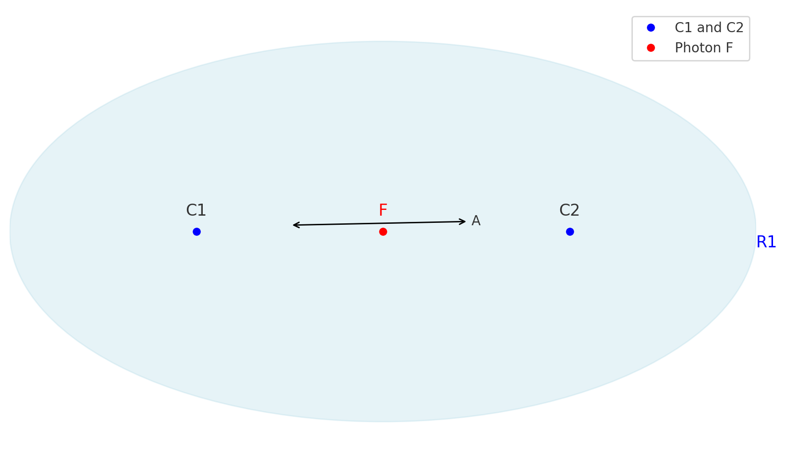
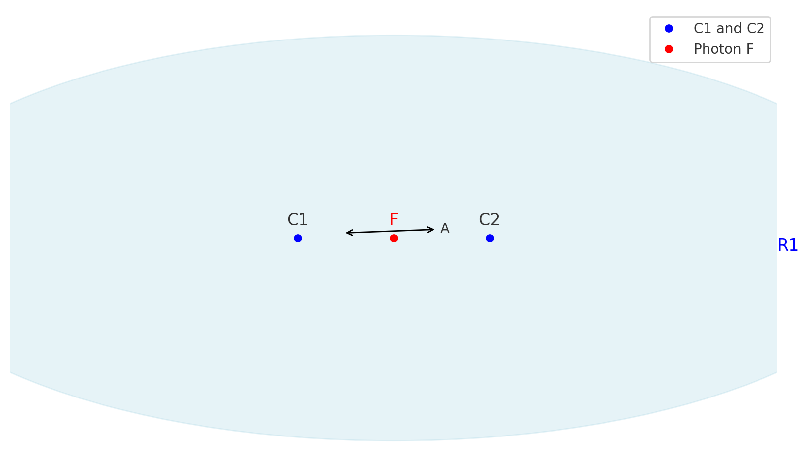

I am not a professional scientist, but rather an enthusiastic science aficionado. The following document is a collection of my thoughts and reflections that, in my view, could revolutionize our understanding of the universe. This theory aims to simplify and shed light on many of the fundamental unknowns in cosmology and physics.
This work presents the concept of the Dynamic Mass-Space-Time Theory, which proposes that mass not only influences space-time curvature but actively generates space and time themselves. According to this theory, the speed of light, often considered a fundamental constant, may actually emerge as a consequence of the universe's total mass and spatial structure. By introducing a relationship between mass concentration, the expansion of space, and the formation of time, this theory provides an alternative explanation to the role of dark energy in cosmological expansion. Furthermore, it hypothesizes that dark matter may not be necessary for explaining gravitational phenomena if mass dynamically creates the space around it. This perspective opens new possibilities for interpreting gravitational interactions and the structure of the cosmos, potentially offering a unified framework that reduces the need for separate entities like dark matter and dark energy.
According to the Dynamic Mass-Space-Time Theory, the speed of light c may not be a fundamental constant, but rather a value that emerges from the total mass and spatial structure of the universe. Here, we demonstrate how the speed of light can be derived based on the universe's baryonic mass and the radius of the observable universe.
First, let us calculate the speed of light based on baryonic mass alone, using the following formula:
\[ c \approx \sqrt{ \frac{G \cdot M}{R} } \]
where:
Substituting these values, we get:
\[ c \approx \sqrt{ \frac{6.674 \times 10^{-11} \cdot 10^{53}}{4.4 \times 10^{26}} } \]
This yields an approximate result of:
\[ c \approx 1.55 \times 10^8 \, \text{m/s} \]
The introduction of the factor 5.9253 suggests that baryonic matter (the matter we can observe directly) only makes up a fraction of the total mass in the universe. If we consider this factor as indicative of hidden mass (often attributed to dark matter and dark energy), we can interpret the remaining percentage as a representation of the unseen components of the cosmos.
Specifically, this means that the percentage of baryonic matter in the total mass can be calculated as:
\[ \text{Baryonic Mass Percentage} = \frac{100}{5.9253} \approx 16.88\% \]
Consequently, the remaining mass, which can be attributed to dark energy and dark matter, makes up approximately:
\[ \text{Dark Energy and Dark Matter Percentage} = 100\% - 16.88\% \approx 83.12\% \]
This aligns closely with current cosmological models, which estimate that around 80–85% of the universe's total mass-energy content is dark energy and dark matter. Thus, the factor 5.9253 provides a coherent explanation for the observed proportion of dark energy in the universe, reinforcing the Dynamic Mass-Space-Time Theory's potential to simplify our understanding of the cosmos.
To account for dark matter, we introduce a factor of 5.9253, representing the total mass (baryonic and dark matter) relative to the baryonic mass alone. This modifies the formula as follows:
\[ c \approx \sqrt{ \frac{G \cdot (5.9253 \cdot M)}{R} } \]
Using the same values for G and R as above, but scaling M by the dark matter factor, we have:
\[ c \approx \sqrt{ \frac{6.674 \times 10^{-11} \cdot (5.9253 \times 10^{53})}{4.4 \times 10^{26}} } \]
This yields a value very close to the observed speed of light:
\[ c \approx 2.998 \times 10^8 \, \text{m/s} \]
The Dynamic Mass-Space-Time Theory proposes that mass does more than merely influence space-time curvature; it actively generates space and time. This means that, as mass accumulates in certain regions, it produces space around it and potentially alters the perception of time. This theory aims to simplify and potentially unify our understanding of cosmological phenomena by suggesting that the so-called "dark energy," traditionally introduced to explain the accelerated expansion of the universe, may not be a separate force. Instead, it is the dynamic generation of space-time by mass itself.
In the standard cosmological model, the effects attributed to dark energy are represented in Einstein's field equations of General Relativity by the cosmological constant \( \Lambda \):
\[ R_{\mu \nu} - \frac{1}{2}g_{\mu \nu}R + \Lambda g_{\mu \nu} = \frac{8 \pi G}{c^4} T_{\mu \nu} \]
where:
According to the Dynamic Mass-Space-Time Theory, the cosmological constant \( \Lambda \), which in traditional cosmology represents the effects of dark energy, can be reinterpreted as the dynamic effect of mass generating space and time. In this view, rather than assuming a separate force (dark energy) responsible for accelerating the expansion of the universe, the theory suggests that as mass clusters and creates gravitational potential, it also generates additional space. This process would naturally result in an expansion effect, especially observable on cosmic scales.
Thus, the term \( \Lambda g_{\mu \nu} \) in the equation does not necessarily imply a mysterious form of energy but could instead represent the cumulative effect of space generated by the mass within the universe. The interaction of massive objects would then lead to the observed expansion as a direct consequence of their space-generating influence.
To explore the implications of the Dynamic Mass-Space-Time Theory, let us consider a purely hypothetical scenario: a universe containing only a single massive particle. In this simplified model, we assume that mass alone is responsible for generating space and time, meaning that the presence of this particle alone would define the size and properties of the entire universe around it.
According to this theory, the speed of light \( c \) can be derived from the total mass of the universe. In the case of a universe with a single particle of mass \( m \), we can approximate \( c \) as:
\[ c \approx \sqrt{ \frac{G \cdot m}{R_{single}} } \]
Rearranging this to express \( R_{single} \) (the hypothetical radius of the universe generated by a single particle), we get:
\[ R_{single} \approx \frac{G \cdot m}{c^2} \]
where:
This expression provides an approximation of the "radius" around the particle, beyond which its influence might theoretically taper off in this simplified model.
However, it is important to note that there are two interpretations of the relationship between \( c \), \( R \), and \( m \) in this theory:
At this early stage of the theory’s development, both interpretations are considered equally valid approximations, as this model is purely theoretical and not necessarily reflective of actual cosmic conditions. For now, this equation serves as a conceptual tool to illustrate how mass might influence the scale of space in a simple universe.
In essence, this model suggests that the size of the universe, even when generated by a single particle, would expand in proportion to the particle's mass if we assume a constant \( c \). Conversely, if \( R_{single} \) is constant, then the speed of light \( c \) would adapt to the mass, illustrating a flexible relationship that may evolve as the theory develops.
Consider a hypothetical universe containing two particles, \( C1 \) and \( C2 \), positioned at a distance \( A \) from each other. At the midpoint of this distance, we place a photon \( F \), acting as an observer. According to the Dynamic Mass-Space-Time Theory, as particles \( C1 \) and \( C2 \) move closer to each other, they generate additional space, causing the overall size of the universe to expand.
The illustration below depicts this concept. The particles \( C1 \) and \( C2 \) are shown on opposite ends of the line segment \( A \), with the photon \( F \) positioned at the midpoint as an observer. As \( C1 \) and \( C2 \) approach each other, the generated space increases, effectively expanding the universe.
In the second illustration, the particles \( C1 \) and \( C2 \) have moved closer to each other, creating more space beyond the observer. The newly generated space is represented by an increase in the length of the universe beyond the original boundaries.
According to the Dynamic Mass-Space-Time Theory, mass is not simply a property that interacts with pre-existing space; rather, it actively generates space. In this view, as mass accumulates in certain regions, it causes the expansion of space around it. This concept suggests that the presence of mass within the universe directly influences the amount of space available, and therefore, the larger the total mass, the greater the space it can create.
To explore this further, let us consider a hypothetical universe where mass is uniformly distributed. In this scenario, we aim to calculate the radius \( R \) of the universe, assuming that the total mass \( M \) generates space according to a constant speed of light \( c \). Our starting point is the equation derived from the relationship between gravitational effects and the scale of space:
For a universe with uniformly distributed mass, we can approximate the radius \( R \) using the following formula:
\[ R \approx \sqrt{ \frac{G \cdot M}{c^2} } \]
where:
Substituting representative values for \( G \) and \( c \), along with the estimated total mass of the universe \( M \approx 5.9253 \times 10^{53} \, \text{kg} \), we find:
\[ R \approx \sqrt{ \frac{6.674 \times 10^{-11} \cdot 5.9253 \times 10^{53}}{(3 \times 10^8)^2} } \]
After calculating, we obtain:
\[ R \approx 3.2 \times 10^{26} \, \text{meters} \]
This result suggests a universe with a radius of approximately \( 3.2 \times 10^{26} \) meters, given a uniform distribution of mass and a constant speed of light. This radius is based on the assumption that all space is generated uniformly by the presence of mass. It provides a conceptual framework for understanding how mass might influence the extent of space in a hypothetical, uniformly mass-filled universe.
In the previous section, we calculated the radius \( R \) of a hypothetical universe with a uniformly distributed mass, resulting in an approximate value of \( R \approx 3.2 \times 10^{26} \) meters. This value provides a baseline for understanding how space might be generated if mass were evenly spread across the universe. However, in our actual universe, matter is not evenly distributed; instead, it is concentrated in galaxies, galaxy clusters, and other structures, which means that local mass concentrations likely play a role in generating additional space.
Our observable universe has an estimated radius of approximately \( R_{obs} \approx 4.5 \times 10^{26} \) meters. To understand the effect of local mass concentrations, we can calculate a scaling factor \( k \) that represents how much more space is generated by the uneven distribution of mass, as compared to a uniform distribution.
We define the scaling factor \( k \) as the ratio between the observed radius \( R_{obs} \) and the radius \( R \) of the hypothetical universe with uniformly distributed mass:
\[ k = \frac{R_{obs}}{R} \]
Substituting the values:
\[ k = \frac{4.5 \times 10^{26}}{3.2 \times 10^{26}} \approx 1.41 \]
This result suggests that the observed universe is approximately 1.41 times larger than a hypothetical universe with the same mass distributed uniformly. This scaling factor indicates that local concentrations of mass, such as galaxies and galaxy clusters, contribute to the generation of additional space beyond what a uniform distribution would produce.
The scaling factor \( k \approx 1.41 \) implies that mass concentrations increase the effective radius of the universe by about 41%. This can be interpreted as evidence that regions with higher mass density generate additional space, effectively expanding the universe beyond what a purely uniform mass distribution would allow. In this framework, local mass concentrations act as "space generators," adding to the total space and affecting the overall scale of the universe.
This observation aligns with the Dynamic Mass-Space-Time Theory, which posits that mass not only influences but actively generates space. Therefore, the clustering of mass in galaxies and clusters amplifies the spatial extent of the universe beyond a simple uniform model, providing a potential explanation for why the observable universe is larger than expected under a uniform mass distribution.
In examining the difference between a hypothetical universe with a uniform mass distribution and our actual universe, which contains concentrated regions of mass, we calculated a scaling factor \( k \approx 1.41 \). This factor quantifies the additional space generated by local mass concentrations, such as galaxies and clusters, compared to a uniformly distributed universe.
Interestingly, this value \( k \approx 1.41 \) is close to the observed ratio of dark energy to total energy in the universe, which suggests that dark energy constitutes approximately 70% of the universe’s energy content. Although \( k \) does not directly represent dark energy, this numerical similarity raises intriguing questions. In current cosmological models, the accelerated expansion of the universe is attributed to dark energy, which is assumed to drive the expansion by adding "extra" space over time.
In the context of the Dynamic Mass-Space-Time Theory, the scaling factor \( k \) could hint at an alternative explanation for the effects commonly attributed to dark energy. Here, the generation of additional space is not a result of an unknown force but rather the outcome of local mass concentrations. This suggests that what we interpret as dark energy might, in fact, be the effect of mass-driven space generation that arises naturally from the uneven distribution of matter.
While it is not possible to directly equate \( k \) with dark energy, the resemblance between \( k \approx 1.41 \) and the dark energy ratio observed in cosmology provides a compelling point of comparison. This similarity may suggest that the influence of mass concentrations on space generation could play a role analogous to dark energy, expanding the universe beyond what would be expected from a uniform mass distribution alone. The observed alignment of these values opens up a fascinating possibility that dark energy’s effects might emerge from the very structure of mass within the universe.
Hubble's Law is an observational principle stating that galaxies appear to recede from each other with a velocity proportional to their distance. Mathematically, it is expressed as:
\[ v = H_0 \cdot d \]
where:
In the standard cosmological model, this expansion is attributed to an unknown form of energy called dark energy. However, under the Dynamic Mass-Space-Time Theory, the observed expansion could be explained as a result of the mass-driven generation of space. Here, local mass concentrations, such as galaxies and galaxy clusters, actively create additional space around them.
According to this theory, mass does not simply exist within space; it generates space. As galaxies and other massive structures form and cluster, they create additional space around them. The further apart these structures are, the more space is generated between them, leading to an apparent expansion effect similar to that described by Hubble's Law. In this framework, the generation of space by mass concentrations would naturally result in galaxies moving away from each other as new space is created between them.
This perspective aligns with the observed proportionality in Hubble's Law: galaxies at greater distances have more mass and space between them, thus generating more space and exhibiting faster recession velocities. This could mean that what we observe as the "expansion" of the universe is, in fact, the cumulative effect of local space generation due to mass concentrations distributed across cosmic scales.
In this context, Hubble's constant \( H_0 \) is not a measure of universal expansion due to an external force but rather an emergent property of mass-driven space generation. The value of \( H_0 \) could be interpreted as a global scaling factor reflecting the collective impact of all mass concentrations within the observable universe. In other words, \( H_0 \) would capture the average rate at which space is generated by the distribution of mass, rather than indicating a force that drives galaxies apart.
Thus, under the Dynamic Mass-Space-Time Theory, Hubble's Law is a natural consequence of the way mass generates space. The further we look, the more cumulative mass-driven space generation we observe, and this appears as an expansion proportional to distance. This interpretation eliminates the need for dark energy as a separate force, attributing the observed "expansion" to the intrinsic effect of mass on space itself.
In the Dynamic Mass-Space-Time Theory, mass concentrations generate space, and the rate of this space generation increases with the density of mass in a region. In local groups of galaxies, where mass is drawn together under gravitational forces, the rate of clustering is not constant; rather, it accelerates as objects move closer together due to gravitational attraction. This accelerated clustering of mass leads to an increased rate of space generation in these areas, contributing to an overall acceleration in the expansion of the universe.
If local mass clustering occurred at a constant rate, the expansion of the universe would likewise remain steady. However, as galaxies and clusters are drawn closer together, they gravitationally attract each other with greater force, accelerating their clustering. This acceleration in clustering in turn speeds up the generation of space, creating an effect that mimics an accelerating expansion. Consequently, as local regions of mass continue to cluster more rapidly, they contribute increasingly to the overall expansion of the universe, leading to the observed acceleration in cosmic expansion.
Thus, under this theory, the observed accelerated expansion of the universe does not require an additional dark energy force. Instead, it is an intrinsic outcome of gravitational clustering: as local groups of mass cluster faster, they generate space at an accelerating rate, which then contributes to the overall accelerated expansion we observe on cosmic scales.
In the Dynamic Mass-Space-Time Theory, mass is the fundamental source of both space and time. This implies that without mass, space itself would cease to exist. In a scenario where all matter in the universe eventually dissipates or transforms, such as through processes like black hole evaporation or particle decay, the space generated by that matter would gradually disappear. As this space contracts or "evaporates" with the disappearance of mass, the universe would effectively collapse back toward a state of vanishing dimensions.
In this model, as mass and the space it generates continue to diminish, energy and any remaining particles would concentrate increasingly into ever-smaller regions, ultimately approaching a point of nearly infinite density and energy. This end state could be conceptualized as a dimensionless, high-energy point—a state where the universe is devoid of mass and space but retains an immense potential energy.
At this theoretical endpoint, where mass and space have all but disappeared, conditions may arise that allow for a new "big bang" or similar event. With all energy condensed into a dimensionless form, quantum fluctuations or unknown high-energy processes could trigger the re-creation of mass. The presence of mass would then initiate the generation of space, potentially giving rise to a new universe cycle.
In this cyclical model, the universe undergoes phases of mass accumulation, space generation, and eventual dissipation. As mass disperses or transforms over vast timescales, the space it once generated also contracts, leading to a return to a high-density state. The process would then reset, with new mass being generated, leading to a new phase of space expansion and universe formation.
This concept suggests that the universe could be self-regenerating, with each cycle driven by the intrinsic properties of mass to generate space and, ultimately, time. Without the need for an external source of energy or space, this cyclical model allows for an eternal process where the universe periodically collapses and re-emerges. The disappearance of matter results in the disappearance of space, which compresses any residual energy to a point where mass may reappear, triggering the cycle anew.
Thus, the Dynamic Mass-Space-Time Theory presents a unique perspective on the nature of the universe, where the disappearance and re-creation of matter govern the expansion and contraction of space. This cyclical model aligns with a universe that is not static but rather dynamic and continually evolving through phases of mass-driven space generation and dissipation.
In the context of this theory, where mass generates space, the quantum uncertainty principle gains an interesting reinterpretation. The Heisenberg uncertainty principle states that it is impossible to precisely measure both the position and momentum of a particle simultaneously. Traditionally, this is understood as a fundamental property of quantum systems, but under the assumption that particles generate space, this uncertainty could be linked to the dynamic nature of space itself.
When particles are viewed as sources of space, their precise positions become intrinsically uncertain because each particle is continuously generating space around itself. This ongoing creation of space could cause fluctuations in both the particle’s effective location and the surrounding spatial structure, leading to a natural limit on the precision with which we can determine its position or momentum. The spatial region influenced by a particle is itself subject to variability, as neighboring particles also contribute to the space generation in overlapping regions.
Therefore, the uncertainty in a particle’s position and momentum may not only be a quantum effect but also a consequence of the particle’s role in dynamically generating space. As particles influence the structure of space around them, this constantly evolving environment adds a layer of complexity to measurements, aligning with the limits defined by the uncertainty principle. In this view, the uncertainty is not merely a property of the particle, but also of the space that it helps to shape.
In the context of the Dynamic Mass-Space-Time Theory, it is assumed that mass generates space. For an atom, this would imply that electrons not only occupy specific energy levels or "shells" around the nucleus but also generate space depending on their energy. Excited electrons, which have higher energy levels, generate more space around themselves, causing them to move further away from the nucleus and occupy higher shells.
When an electron absorbs energy (for example, by absorbing a photon), its effective mass slightly increases due to the added energy. According to this theory, this increase in effective mass causes the electron to generate more space, allowing it to move farther from the nucleus. Thus, the distance between electron shells could be viewed as a function of the energy possessed by the electrons, with higher energy states leading to greater spatial generation and thus further distance from the nucleus.
When an excited electron returns to a lower energy level, it emits a photon and loses some of its energy. In this theory, the reduction in the electron's energy results in a corresponding decrease in its effective mass, and consequently, in the space it generates. This causes the electron to move closer to the nucleus, where its energy and generated space reach a new balance.
This concept suggests that space generated by particles like electrons is dynamic and adjusts to their energetic states. When electrons lose energy by emitting radiation, they generate less space, allowing them to move closer to the nucleus. Conversely, when they gain energy, they generate more space, causing them to occupy higher shells.
This theory implies that space itself is not static but is instead responsive to the energy of matter. Within atoms, electrons in different energy states generate varying amounts of space, which could explain the structured shell model of atomic orbitals. When electrons lose or gain energy, they alter the space they generate around them, leading to shifts between shells.
On a larger scale, this idea might imply that any significant changes in the energy of matter—such as the radiation emitted by stars—could influence the structure of space around them. In this way, the arrangement of space across the universe might dynamically respond to changes in energy and mass distribution, offering a fresh perspective on the nature of space as influenced by matter.